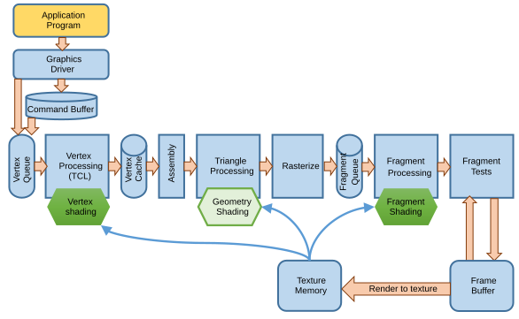

Page 8: The Pipeline
Historically, I taught this material in a lecture that combined the history and development of graphics hardware with the connection to how shaders worked. The 2022 version of this lecture was better than the 2023 version:
What follows is an attempt to have Claude turn that lecture (I gave it the slides and the transcript) into a workbook page. I had to manually edit almost everything - and rewrite some sections entirely, and redo a lot of the figures.
A Triangle’s Journey
Every time your program calls a draw command, something remarkable happens. Triangles specified as a handful of numbers — a few (x, y, z) positions, some normals, maybe some colors — get transformed into thousands of colored pixels on screen, in a fraction of a millisecond. How?
The answer is the graphics pipeline: a hardware architecture designed specifically to process geometry as fast as physically possible. Understanding how it works is essential — not just because it is cool, but because it shapes everything about how you write graphics code. The limitations and affordances of the pipeline are the reason textures are preferred over more accurate lighting, the reason we batch draw calls, the reason vertex shaders exist, and the reason shaders are structured the way they are.
The Key Insight: Everything is Independent
The entire pipeline design rests on one crucial observation about how we model 3D scenes: everything is independent.
Triangles are independent. We design our scenes so that each triangle does not “know about” any other triangle. Its color, position, and shading can all be computed without reference to the adjacent triangles. (The Z-buffer then handles the one thing triangles do need to know about each other — which one is in front — but it does this after each triangle has been fully processed.)
Vertices are independent. Even within a single triangle, each vertex can be processed separately. All the relevant information (position, normal, color, texture coordinates) lives at the vertex itself.
Pixels/Fragments are independent. Once a triangle has been rasterized into a list of pixel candidates, each pixel’s final color can be computed independently using local lighting — texture lookups, a light calculation — without needing to know what any neighboring pixel will look like.
This might seem like a minor design choice, but it has enormous consequences. Independent work items can be processed in parallel. And parallel processing is exactly what modern GPUs do.
What is a Pipeline?
In computer architecture, a pipeline is a technique for increasing throughput: rather than waiting for item #1 to finish processing completely before starting on item #2, you start item #2 as soon as the first stage of processing is free — the same way a factory assembly line works.
CPUs use pipelining too. When executing three instructions:
C = A * B (instruction 1)
F = D * E (instruction 2)
J = G * H (instruction 3)
The processor can begin fetching instruction 2 while instruction 1 is still being computed. This works as long as there are no dependencies — if instruction 2 needed the result C from instruction 1, it would have to wait (a pipeline stall). Pipeline stalls are expensive, and a lot of CPU microarchitecture complexity exists to detect and handle them.
Now notice something elegant about the graphics case: because triangles are independent, there are no pipeline stalls. Triangle #2’s vertex processing does not depend on triangle #1’s results. The hardware can begin processing triangle #2 the moment the first stage is free, without any stall-detection logic whatsoever. This simplicity is a key reason GPU pipelines can run so fast.
Beyond pipelining, the independence of vertices and pixels enables a second performance technique: parallelism. If each vertex can be processed independently, you can have many vertex processors all working simultaneously. Modern GPUs have many shader cores doing exactly this. The same applies to fragments: thousands of pixel/fragment processors running in parallel, each coloring one fragment of one triangle independently. The fragments don’t even need to be from the same triangle.
The Logical Steps
We divide the rasterization process into 6 pieces. Each has a distinct function, and specific inputs and outputs. Each takes input from the step before it and outputs to the step after it (with the exception of the uniform variables that can be read by many stages).
{kind=link}
Application: The program that creates and specifies the graphics. It sends a description of what to draw to the hardware. This information consists of the triangles themselves and uniform information (that doesn’t change while drawing the triangles). The triangles are sent in groups, and within the group, the uniforms do not change. Uniforms include matrices (for example, the modeling, viewing, and projection matrices), textures, lighting information, and shader programs. The triangle information consists of properties of each vertex, called attributes.
Vertex Processing: The graphics hardware processes each vertex separately. If a vertex is shared between triangles, it only needs to be processed once (although, sometimes it might need to be re-processed if there isn’t adequate storage to cache the results). Importantly, each vertex is processed independently. This allows for parallelism and re-ordering (to enhance sharing). The input and output of this phase are lists of vertices. However, by going through processing, the vertices get additional information added. Importantly, during this stage, the screen space position of each vertex is computed and attached to the vertex.
Triangle Processing: The vertices are re-assembled into triangles. At this step, triangles may be removed (if they are determined to be off the screen) or modified (if they are partially off the screen). Getting rid of triangles that are off the screen is called clipping. In modern graphics pipelines, this stage might be programmable with a geometry shader that can process triangles and add or remove them.
Rasterization: The triangles are turned into a list of fragments (pixels). There is one fragment for each pixel the triangle covers. After this stage, each fragment is independent. Once the rasterizer creates the fragment, the fragment does not remember what triangle it came from. Information from the vertices of the triangle (positions, normals, texture coordinates, etc.) are interpolated using barycentric interpolation so that every fragment has a value. The set of properties of the vertices that are interpolated, such that every fragment has a value as well, is called varying variables.
Fragment Processing: Computations are performed for each fragment. This stage can change the properties of the fragment. Usually, processing computes the fragment’s color, and sometimes it will change its depth. The inputs are the values for the fragment provided by the varying variables. Importantly, fragment processing cannot change the screen space position of the fragment: that would make it a different fragment. Fragments are associated with a specific pixel (a place in the final image).
Test and Write: Once the color and depth of a fragment are determined, they can be written to the target memory (usually, the frame buffer, but sometimes a texture). However, this step might involve a test where the memory is first read, a test is performed, and the write is dependent on passing this test. The Z-Buffer algorithm is the most standard of these tests, but there are others.
With a modern GPU, we can program the vertex processor, the triangle processor, and the fragment processor. In class, we will focus on programming the vertex processor and the triangle processor.
An important thing to understand here is what information each step is passing to the next step. This will be critical when we discuss how to program the steps.
{kind=link}
Importantly, the main flow is vertices into and out of the vertex processor, and fragments into and out of the fragment processor. These stages process their items independently: each vertex or fragment is independent of all others.
The Demo: What the GPU is Working On
Claude decided to put in this demo. I kept it since otherwise the page gets boring.
The scene below contains several 3D objects, each made up of many triangles. Click Show Wireframe to see the actual triangle mesh — this is a good way to understand what “sending triangles to the GPU” really means. Every one of those triangles flows through all the pipeline stages every frame.
You can look at the code to see how the scene is set up. Notice that the triangle and vertex counts (shown below the demo) represent the GPU’s per-frame workload. All those vertices are processed simultaneously by the vertex stage.
Claude said the vertices are processed simultaneously. This isn’t really true. Understanding this distinction is useful.
First, they are processed in groups. Each mesh is a separate buffer of triangles, and these are submitted one at a time. Within each group, the triangles are processed in parallel. Conceptually, they are independent so we can think of them as being processed simultaneously. But in reality, some number of them are being processed in parallel, in some order.
The Hardware Pipeline
The logical stages above map onto a specific hardware arrangement. This is the pipeline as it existed in the programmable-GPU era (roughly 2006 onward), which is still the model your WebGL/WebGPU code targets today:
{kind=link}

Let us walk through each block, noting what it does, what its inputs and outputs are, and why it could be a bottleneck.
Application Program
This is your code. You set up transform matrices, lighting uniforms, and issue draw commands. Critically, you also upload triangle data — positions, normals, texture coordinates — into attribute buffers on the GPU.
Early OpenGL required 11 separate function calls (with 35 pushed arguments) per triangle. This was tolerable when drawing a triangle was much slower than processing things on the CPU. This overhead would be completely unacceptable today when scenes contain many triangles. The solution, which you have been using via THREE.js, is attribute buffers: send a large block of vertex data to the GPU in one batch, then issue a single draw call that processes all of it.
Potential bottleneck: The CPU-to-GPU data transfer. If you upload large amounts of new geometry every frame, the memory bandwidth between the CPU and GPU becomes the limiting factor. The solution: upload static geometry once and reuse it across many frames.
Graphics Driver and Command Buffer
Your draw calls go to the graphics driver, a software layer that translates high-level API calls (WebGL, Vulkan, Metal, etc.) into the low-level commands the specific GPU hardware understands. The driver queues these into a command buffer — a structured list of “draw this set of triangles with these settings.” The command buffer decouples your application’s call rate from the GPU’s consumption rate, smoothing out timing irregularities.
Vertex Queue
The command buffer’s triangle descriptions are split back into individual vertices and placed into a vertex queue. This is where the GPU begins its parallel processing: instead of waiting for all vertices to be queued before processing begins, the vertex processor starts consuming from the front of the queue immediately.
Vertex Processing (TCL — Transform, Clip, Light)
This is the first major programmable stage: the vertex shader. Each vertex enters independently and is processed by the same program, running on one of the GPU’s many shader cores. The acronym TCL describes what the fixed-function hardware did here before shaders existed:
- Transform: Apply the model, view, and projection matrices to convert the vertex position from object space into clip space (homogeneous coordinates).
- Clip: Determine whether the vertex is inside the view frustum. Vertices (and triangles assembled from them) outside the frustum are discarded (or chopped to fit on screen).
- Light: Compute per-vertex color from the lighting equations (normals, light positions, material properties).
Vertex in → vertex out. This constraint is fundamental to the architecture. The vertex shader receives one vertex’s data and outputs that same vertex’s data, possibly transformed and augmented. It cannot create new vertices (that is the geometry shader’s job) or read neighboring vertex data.
Potential bottleneck: If your scene has an extremely large number of vertices and complex vertex shaders, the vertex stage can become the bottleneck. Reducing vertex count (LOD systems) or simplifying vertex shaders helps.
In modern pipelines, clipping usually happens later (after the triangles are processed).
Vertex Cache
Processed vertex results are stored in a small vertex cache so they can be reused if the same vertex appears in multiple triangles (which is common in meshes). In the early days, this was critical for performance. Modern hardware handles reuse differently, but the conceptual idea — avoid reprocessing identical vertices — still shapes how meshes are structured.
Assembly
Once vertices have been processed, they need to be grouped back into triangles. The assembly stage looks up the three vertex indices that make up each triangle and reconstitutes the triangle as a unit, ready for rasterization. This is one of the few places in the pipeline where a triangle exists as a whole entity rather than as independent vertices.
Triangle Processing (Geometry Shading)
In the original fixed-function pipeline, there was nothing here — triangles passed straight through to the rasterizer. The geometry shader stage was added later (around 2006) as an optional programmable step that can receive an entire triangle and emit new primitives: subdivide a triangle into smaller ones, discard it, or even transform it into a line or point. We won’t discuss Geometry Shaders in class.
Rasterization
This fixed-function stage performs the actual conversion from triangles to pixel candidates. For each triangle, the rasterizer:
- Determines which pixels fall inside the triangle (using the projected 2D coordinates)
- Generates a fragment for each such pixel
- Interpolates per-vertex attributes (color, texture coordinates, normals) across the triangle using barycentric interpolation
The output is a stream of fragments, each carrying interpolated vertex data and a screen (x, y) position. Fragments are the inputs to the fragment shader.
Potential bottleneck: Rasterization scales with the number of pixels a triangle covers, not the number of triangles. Very small triangles (one or two pixels) waste the GPU’s rasterization hardware. Very large triangles covering the whole screen generate many fragments and may stress the fragment stage. Knowing this helps you understand artifacts like overdraw problems and why tiny triangles are inefficient.
Important: the rasterizer interpolates so that each fragment gets information that depends on all three of a triangle’s vertices.
Fragment Queue
Fragments are buffered in a fragment queue before the fragment shaders consume them, for the same reason the vertex queue exists: to smooth out the rate mismatch between rasterization (fast, deterministic) and fragment shading (variable cost, especially with texture lookups).
Pixel Processing (Fragment Shading)
The fragment shader runs on each fragment independently. Like the vertex shader, it is fully parallel — all fragments from the current frame can be processed simultaneously by the GPU’s shader cores. The fragment shader is what you program when you want per-pixel effects:
- Texture lookups: Sample one or more textures at the fragment’s UV coordinates (read from the texture memory unit).
- Per-pixel lighting: Compute a full lighting calculation at each pixel using the interpolated normals and the light positions. This is Phong shading (per-pixel) vs. Gouraud shading (per-vertex).
- Procedural patterns: Generate colors mathematically without any texture at all.
Fragment in → fragment out. Just as the vertex shader has a constrained interface (one vertex in, one vertex out), the fragment shader has a constrained interface: one fragment in, one fragment color out. Its main job is to determine the color of the fragment, although it is also allowed to change the depth value or set other information in the fragment (in case those values need to be written to memory).
Texture Memory is a separate memory subsystem connected to the fragment processors, optimized for 2D spatial locality of access (since adjacent pixels often sample nearby texture regions). The GPU also supports render to texture — the output frame buffer can be fed back in as an input texture on the next pass, enabling effects like shadow maps, reflection maps, and post-processing.
Potential bottleneck: Fragment shading is often the bottleneck in modern applications. Complex shaders with many texture lookups, or very high-resolution frame buffers with lots of overdraw, can make this stage the limiting factor. This is why optimizing shaders — reducing texture fetches, simplifying math — is important.
Important: the fragment shader cannot change the screen space position of a fragment. If you change x,y, it becomes a different fragment!
Pixel Tests
Before a fragment’s color is written, it must pass a set of per-fragment tests:
- Depth test (Z-test): Compare the fragment’s depth to the value already in the Z-buffer at this pixel. Discard if farther away.
- Alpha test: Optionally discard based on the fragment’s opacity (useful for cutout transparency).
- Stencil test: A programmable masking test used for effects like reflections and shadows.
If a fragment fails any test, it is discarded and the frame buffer is unchanged. A fragment that passes all tests writes its color (and new depth) to the frame buffer.
One important note: the normal order of operations is to compute the expensive fragment shader before the Z-test. This means we do all that work and then potentially throw it away if the fragment is occluded. Early Z-test is a hardware optimization where the depth test is performed before the fragment shader, skipping shading for occluded fragments entirely. This is why rendering opaque objects front-to-back often improves performance.
Frame Buffer
The frame buffer is the final destination: the 2D array of RGBA pixels that will be sent to the display. When the frame is complete (all draw calls processed, all tests passed), the frame buffer contents are presented on screen — typically via a double-buffer swap to avoid showing partially-rendered frames.
Texture Memory
In a modern graphics system, all of the programmable elements have the ability to read from the texture memory. This means that vertex shaders (and geometry shaders) can access textures, which allows things such as displacement mapping. Most texture access happens in the fragment shader.
What You Can Program
Looking back at the hardware diagram, you can identify which boxes you control:
- Vertex Shader: You control vertex processing entirely. You read per-vertex attributes (position, normal, UV coords) and write clip-space position plus any data you want to pass to the fragment stage.
- Fragment Shader: You control fragment processing entirely. You read interpolated vertex outputs and write an RGBA color.
- Geometry Shader: Optionally, you can add/remove primitives between assembly and rasterization (we won’t discuss this in class).
- Everything else (driver, rasterization, Z-test, frame buffer write) is handled by the fixed-function hardware.
This is why understanding the pipeline matters so much for the next section: when you write a vertex shader, you are literally programming the Vertex Processing box. When you write a fragment shader, you are programming the Pixel Processing box. Knowing their constraints — one vertex in / one vertex out; one fragment in / one color out — is not arbitrary syntax, it is the architecture of the hardware.
Check Your Understanding…
Fill in the type-in boxes to check that you understand these important concepts. Write answers (a sentence or two should be fine) in your own words.
Question 1: Why do we need to put information (such as colors) on vertices not triangles? (You should remember we have to do this from prior discussions of meshes)
Question 2: What kind of shader would you implement displacement mapping in? Why? Hint: compare this with environment or bump mapping.
Question 3: The fragment shader cannot get information about particular verticies. What does it get instead?
| Kind
Kind of rubric items: standard - expected from all students advanced - used to get a better grade creative - an opportunity to do something creative optional - not required, but encouraged |
Description | |
| standard | Pipeline Questions |
Summary: A Triangle’s Journey
A triangle enters the pipeline as three vertices with positions and attributes. It flows through:
- Vertex stage — each vertex is independently transformed; all vertices processed in parallel by thousands of shader cores
- Assembly — vertices are regrouped into triangles
- Rasterization — each triangle is converted into a list of fragments with interpolated attributes
- Fragment stage — each fragment is independently shaded (texture, lighting, etc.); all fragments processed in parallel
- Pixel tests — each fragment is depth-tested and either written to the frame buffer or discarded
The whole process exploits one architectural principle: independence at every stage enables parallelism at every stage. This is the reason a modern GPU can render tens of millions of triangles per second.
Next, we will start programming this pipeline directly — writing vertex and fragment shaders in GLSL.
Next: Page 9 - Graphics Performance